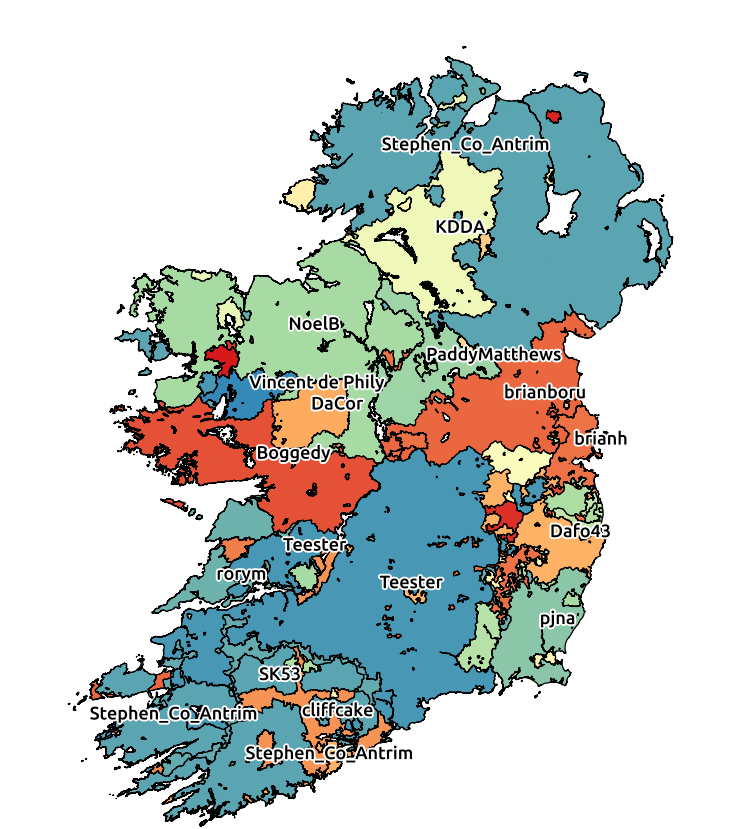
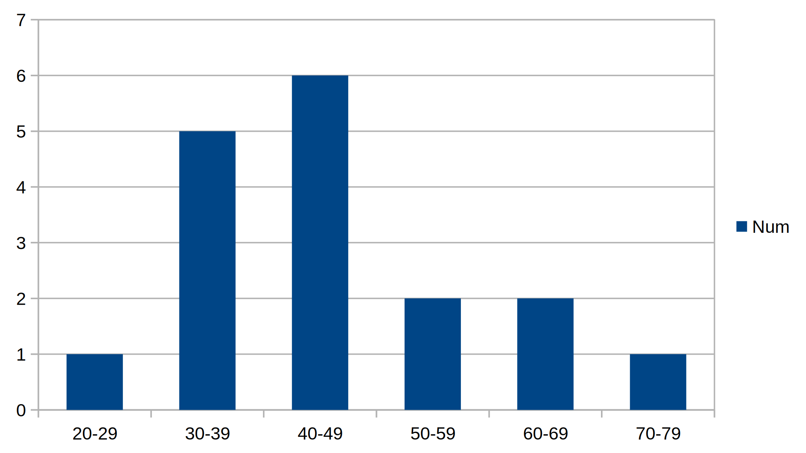
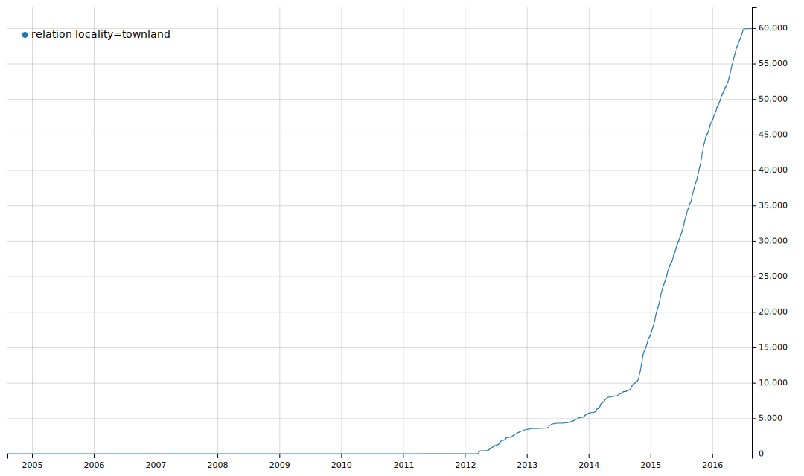
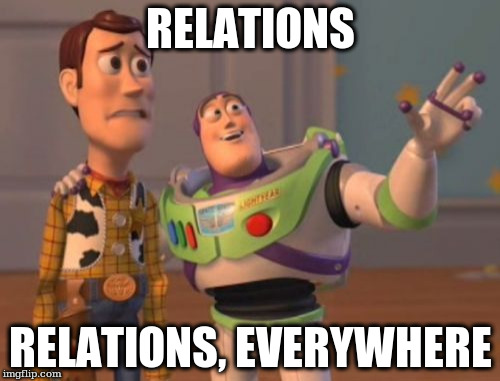

Mapping Ireland's 61,000 administrative boundaries
The really, REALLY long way from Abartagh to Youngstown
Created by Rory McCann www.technomancy.org & Dave Corley @DaCor_ie
Townlands
Lowest level of Ireland's administrative hierarchy
boundary=administrative admin_level=10
Very small - Traditionally the amount of land one extended family could live off.
Very old - Date back about 1,000 years
Why?
Why not?
This is an OpenStreetMap conference, do we need to explain why you wouldn't map something?
Why?
Addresses
Anyone geocoded Irish addresses? It's a mess.
Houses in rural Ireland don't have house numbers, postcodes, or street names. Instead using (sometimes) "House Name, Townland, Nearby Town, County"
Townlands are important and helpful for geocoding many addresses.
Newly introduced postcode system (Eircode) might change that
Why?
Other administrative boundaries
Townlands are atomic unit of other administrative boundaries
Larger administrative boundaries are made up of townlands.
Electoral Divisions (NUTS LAU), Constituencies
Can now add those to OSM
Can now use Irish official government data which is keyed on ED
Why?
History and Heritage
Part of Ireland's cultural heritage and should be preserved and spread.
19th/early 20th century census records are sorted by townlands.
Helps people searching for Irish ancestry/genealogy
Names record a history
e.g. Passifyoucan, Co. Dublin. Used to be the site of a lot of highway robberies
Open Data
Can't we import some open data from the government?
No. Not available, incompatible licence or simplified
So how do we do it?
Townlands not signed on the ground.
Borders aren't marked clearly
So how do we do it?
Tracing!
Most maps now a days don't show townland borders
Or other borders. Only counties (admin_level=6)
Tax authorities to the rescue!
19th Century British tax authorities
Ordnance Survey - First edition
From 1829-42 the Ordnance Survey mapped Ireland for tax purposes
Made some beautiful Six Inch to a Mile (1:10,5600) maps ("First Edition")
Clearly show townland borders
Copyright has expired!
Ordnance Survey - First edition
Aside: Historical tidbits
Population of Ireland has halved since then. (Famine in 1845-52 & emigration ☹)
Ireland was probably one of the best mapped countries on the planet at the time
Nice easy to read maps

These are ~2,000 large sheets from 150 years ago.
Problems: Only a few libraries and universities physically have them
Ordnance Survey Ireland have a copy
Scanned in!
Cropped and rectified!
On the web
But

Claim copyright ☹
Need another source
1829-42 - First Edition of 1:10,560
1910s - Third Edition of 1:10,560
1922 - Ireland gets independence from the UK
1939 - WW2 starts
1940 - UK war office, thinking they might need maps of Ireland, fall back to the 3rd Ed.
Re-scale 3rd Ed 4:1 to produce GSGS 3906 maps
Glucksman Map Library, Trinity College, Dublin
Glucksman Map Library, in Trinity College, Dublin had a scan
They will give us copies for OSM, if we'll scan and rectify for them
Success!
Let's get rectifying
Upload the images to Map Warper (mapwarper.net)
About ~675 images
Community starts cropping, rectifying and mapping.
Remember the 6 inch map?
Quality 😕
This is what we have to work with. Can you spot the townland borders?

Quality 😕
This is what we have to work with. Can you spot the townland borders?

Let's get mapping
OK, it's hard, but let's do it
Some things to make it easier
Some tools to help
JOSM preset and map paint style
Slippy map
townlands.ie
Documentation
JOSM
All mapping was done in JOSM
Much easier to include custom imagery layer(s)
Custom map paint style to display mapped Townlands (etc)
Custom preset
Validator for multipolygon relations
Lots and lots of relations!
maps.openstreetmap.ie - Slippy map
We set up a replicating slippy map tile server which shows the mapped townlands (etc).
Allows people to see mapping progress as it's done.
Missing townland? Maybe incorrect relation
townlands.ie
Rory set up townlands.ie
Django web app that imports OSM data and displays it formatted
Includes progress reports and rates of mapping, to spur people on.
YouTube videos
Dave made video tutorial on mapping townlands
2½hrs of video
Covers all aspects of georectifying a sheet, using JOSM, mapping the townland, and other areas
Led to some new mappers coming out the woodwork and contributing
Townlands are building blocks
Townlands are administrative building blocks
Map all the boundaries

While adding townlands, we can now start adding higher level administrative boundaries
Civil Parishes
Based on Church of Ireland (Anglican) parishes
Church of Ireland was disestablished in 1871
Not used much any more for state purposes
Very useful for genealogy, since old census, birth certs include CP as a field
boundary=civil_parish
Baronies
Each county is split into a few baronies
Not used much anymore, nor used a lot historically
boundary=barony
Electoral Divisions
admin_level=9
Constituencies (which are often changed) are legally defined by EDs (mostly)
Official statistics (Census) use EDs
EU level statistics area (NUTS / LAU)
Some stats
There are 60,513 townlands
First townland added in 27th June 2010
Last added 25th August 2016
Who's mapping?

Lots of people, but core of hardcore mappers
Who's mapping?
Who's mapping?
Local mapping.
People started mapped their local area or area they had a connection to.
And then spread out
People care about areas, and wanted to improve that area
Who's mapping?
Not very diverse in some ways - mostly male
Diverse in age

Rate of mapping
Keep on mapping!
Mapped townlands

One problem

Since townlands are small, there are now tens of thousands of tiny relations all over Ireland
Lessons
Seemed impossible in 2010
But we did it!
Tools & resources are important.
Lessons
Most mapping done by small number of people
But they're not necessarily the people you think, or that you know about
Setting a complex task is all well good, but for success you need to come together and build on what you are best at
Some are techies, some are teachers, some are motivators, all are important
You have to get out there and tell people, in order to find the dedicated mappers
Thanks
Glucksman Map Library, Trinity College Dublin - provided the GSGS 3906 maps
Bodleian Libraries, University of Oxford who provided some missing GSGS 3906 maps
Map Warper - vital web based map rectifier (Sorry for filling your disk!)
Blueprint Reprographics - Dublin printing company that helped us scan in some of the large map sheets we have
Thanks to Govs
Thanks to the governments of Ireland and Northern Ireland
Both have (now) released townland data, albeit generalised, in an open licence
Just before we finished
Wasn't that nice of them?
The Future - What next?
Can utilise government's open data (EDs)
Map more accurately - Dramatically improved county borders
Donate the rectified images back to the libraries
Currently matching & importing official Irish place name data (logainm) to get better name:ga coverage
END
(Oh dear god don't have to stare at those ancient maps anymore)